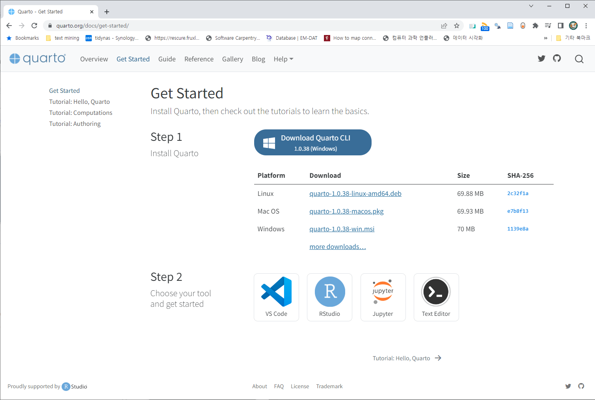
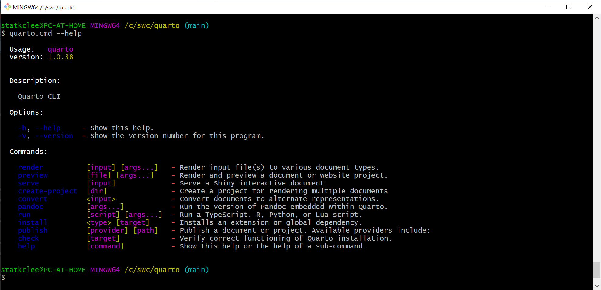
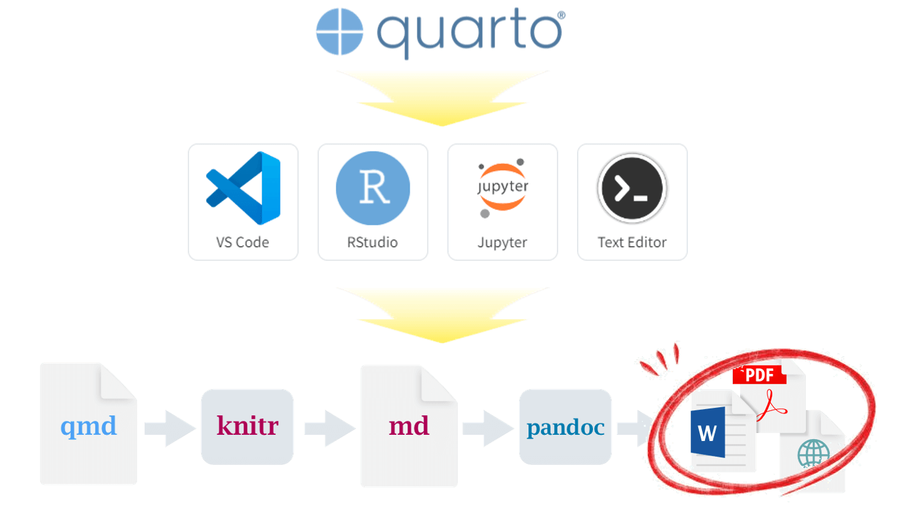
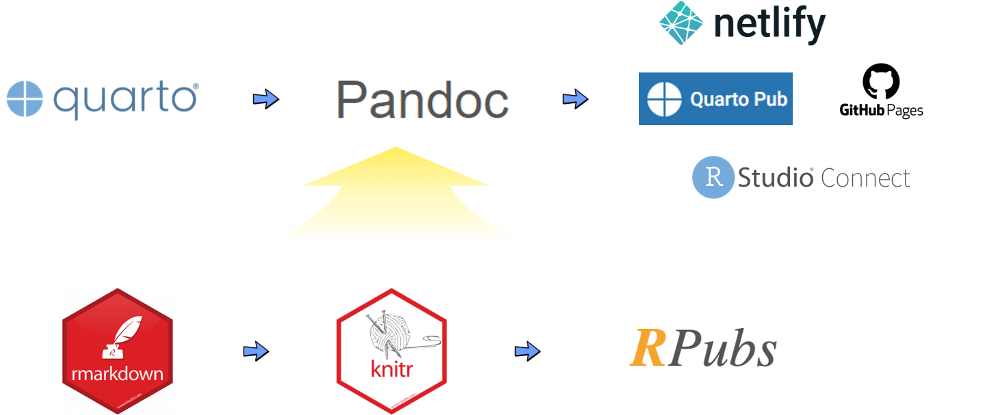

Code
Sys.which("quarto")
quarto
"C:\\Users\\STATKC~1\\AppData\\Local\\Programs\\Quarto\\bin\\quarto.cmd" Quarto를 운영체제에 맞춰 설치한다. Quarto 는 기본적으로 CLI 라서 설치 후 제대로 설정이 되었는지는 환경설정에 경로를 등록해줘야 한다.



윈도우 시스템의 경우 quarto.exe가 아니고 quarto.cmd 라 이에 유의한다. 즉, 제어판 → 환경 변수 설정 … 에서 "C:\Users\사용자명\AppData\Local\Programs\Quarto\bin 디렉토리를 등록한 후 quarto.cmd 을 사용해서 출판한다.
Sys.which("quarto")
quarto
"C:\\Users\\STATKC~1\\AppData\\Local\\Programs\\Quarto\\bin\\quarto.cmd" quarto 웹사이트에서 Quarto CLI 엔진을 설치한다. 통합개발도구(IDE)를 설치한다. Quarto CLI를 지원하는 IDE는 VS Code, RStudio, Jupyter, VIM/Emacs 와 같은 텍스트 편집기가 포함된다. IDE까지 설치를 했다면 literate programming 방식으로 마크다운과 프로그래밍 언어를 결합하여 출판을 위한 전문 문서 저작을 시작한다.

데이터 사이언스 저작물을 제작하게 되면 그 다음 단계로 출판을 해야하는데 다양한 문서를 모아 프로젝트로 담아 Quarto Pub에 전자출판한다. 다른 출판 플랫폼으로 netlify, GitHub Pages, RStudio Connect가 많이 사용된다.

Quarto Pub 웹사이트에 출판하는 방식은 Quarto CLI 를 사용한다. 필히 RStudio 내부 Terminal을 사용해서 Quarto Pub으로 출판한다.
quarto.cmd publish quarto-pub
? Authorize (Y/n) ›
❯ In order to publish to Quarto Pub you need to
authorize your account. Please be sure you are
logged into the correct Quarto Pub account in
your default web browser, then press Enter or
'Y' to authorize.첫번째 출판하게 되면 인증작업을 수행하고 나면 _publish.yml 파일이 하나 생성된다.
- source: project
quarto-pub:
- id: 1fa3ab1f-c010-453a-aaf2-f462bd074a66
url: 'https://quartopub.com/sites/statkclee/quarto-ds'이제 모든 준비가 되었기 때문에 다음 명령어로 작성한 출판 문서를 포함한 웹사이트를 로컬에서 미리 확인 한 후에 Quarto Pub으로 전자출판한다. 윈도우에서는 RStudio 내부 Terminal CLI를 사용하는 것을 권장한다.
quarto.cmd preview
quarto.cmd publish quarto-pub